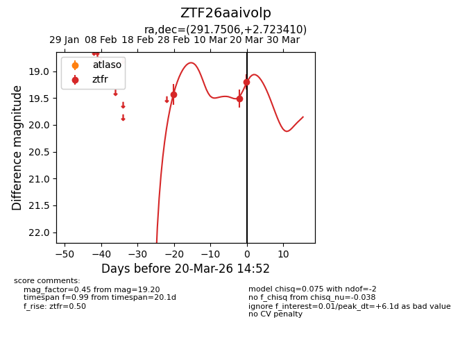
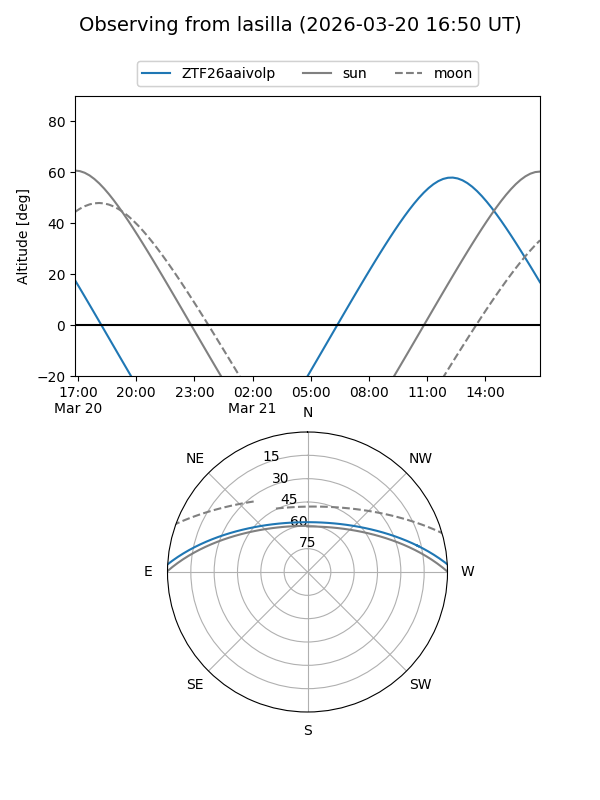
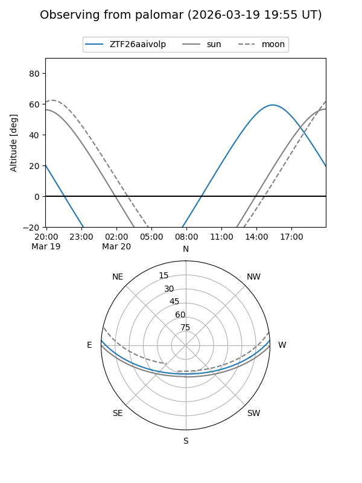
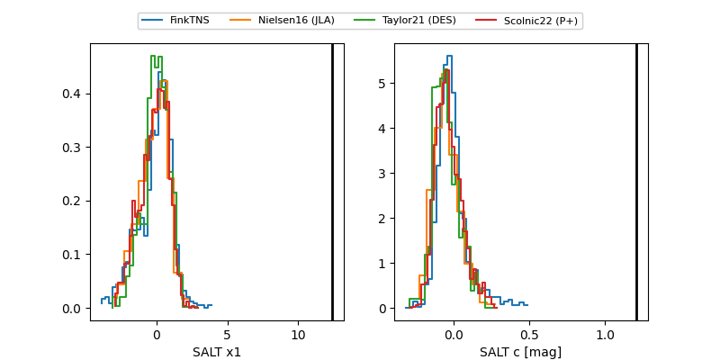

ZTF26aaivolp
Target ZTF26aaivolp at 2026-03-20 14:54
Aliases and brokers:
FINK: link
Lasair: link
ALeRCE: link
alt names
ZTF26aaivolp (ztf,fink_ztf)
Coordinates:
equatorial (ra, dec) = 291.7506,+2.72341
equatorial (HMS+DMS) = 19:27:00.15,+02:43:24.28
galactic (l, b) = (39.4459,-6.64593)
Flags:
Photometry:
last ztfr=19.20
3 ztfr detections
Lightcurve

Visibility


Additional plots
